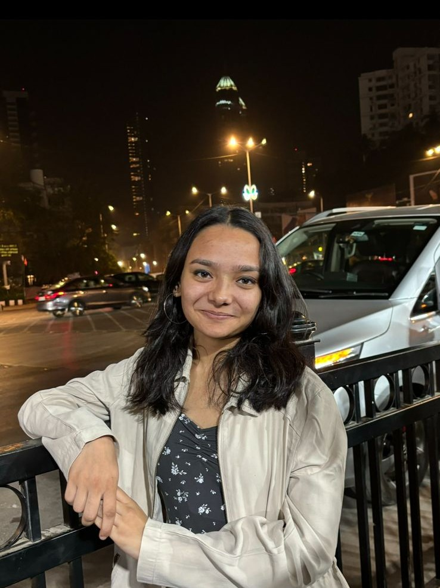

ChEABLOGS
Radhika Goyal | P&G
Hi! I’m Radhika, a fourth-year Chemical Engineering student. I hail from Jaipur. I enjoy playing sports, dancing, and travelling whenever I get the chance 😊. I recently completed an eight-week internship at Procter & Gamble in their Supply Chain division. In this blog, I’ll share my experience at P&G, what it was like working there, and the things I learned along the way. I’ll also talk about my overall experience with the intern season—how the process typically works and what my own journey looked like. Whether you're just starting to prep or somewhere in the middle of the chaos, I hope this helps you get a clearer picture of what to expect!
Q:What was your motivation for the internship and what was the recruitment process like?
Up until my second year, I actually liked core chemical engineering. In fact, I ended up taking a research project in my 4th semester under a professor whose course I really enjoyed. Soon after, I did an R&D internship at a plant that was related to that project. So, I had a decent amount of exposure to how research in chemical engineering really works—what it looks like in labs and how it translates in industry. Of course, that wasn’t enough for me to understand everything—but, it was enough for me to realize that research wasn’t something I saw myself doing in the long term. Hence, I was left feeling pretty clueless—I didn’t know what path to go down next. So, I started doing what most of us do when we’re lost—I talked to seniors. A lot of them. I asked them about their intern experiences, how they chose their fields, what they liked or regretted. Through all these conversations, I slowly started ruling things out. Consulting felt too hectic for my liking, I didn’t really have a finance background and core no longer appealed to me. I was left with FMCG, which seemed like something I could maybe try. To be honest, at this point, getting an internship felt more important than getting one in my “ideal” field—because I genuinely didn’t know what I liked yet. So, I applied everywhere. P&G was the first company whose process I got involved in. Their selection process had two tests—the PEAK Performance Assessment, which is a situational judgment test focusing on behavioural and work styles, and another interactive one that tested cognitive skills like logical reasoning, numerical aptitude, and memory. To prepare, I followed Bahroz Abbas’s YouTube channel and took notes on all his tips. I also spoke to a lot of seniors to understand all the little tricks and strategies. This was enough to do well. At the same time, consult shortlists were also being released, and there were tests for some companies. I had a decent number of shortlists across consult, FMCG, and finance. I began prepping seriously for consult cases. Those two weeks after getting shortlisted were really hectic—but I genuinely enjoyed the process. I got to interact with a lot of new people and that was pretty exciting. The buddies assigned are actual consultants, with a pretty hectic schedule packed with work and travel. I remember doing cases with them at 2 a.m., sometimes while they were at airports or between client calls. It felt intense, and while I learned a lot, there was a part of me that felt uneasy. Watching their lives up close made me question whether I’d be okay with that kind of work-life balance. But at that point, I didn’t have the luxury to be picky. I wasn’t sure about what I wanted, so I just kept going with the prep, hoping it would eventually lead somewhere. In between all of this, I got the P&G GD shortlist, with just one day to prepare. I went back to the same youtube channel, watched everything I could, and somehow squeezed it in between all the consult prep. The GD was my first professional interview ever, and I remember being super nervous. But, I managed to give it confidently. I got through to the final round interview, which was scheduled for Day 1. After the GD, I doubled down on consult prep again. But even after practicing so many cases, I still didn’t feel confident. And then came D-Day. I remember just running around the LHC the entire time, giving back-to-back interviews. It was honestly really intense and exhausting. But things started going downhill pretty quickly. I got rejected by two MBB firms, and that hit my confidence hard. For the next two interviews, I ended up arriving late, and it felt like the interviewers weren’t even interested—it was more of a formality. By the end of it, I was rejected by all four consult firms I had interviews with that day. I still remember sitting outside LHC, watching everyone go out for lunch, celebrating their offers, and I was just sitting there with this heavy, sinking feeling. It was honestly one of the worst days I’ve ever had. But I didn’t even get the time to process it properly, because I still had P&G left. Coming back from that mess of a day and starting prep for P&G again has to be one of the hardest things I’ve ever done. What really got me through this was the support from my friends and I am really grateful for that. I had one finance interview the next morning, which I wanted to skip in order to focus on P&G but I couldn’t leave it because that would lead to a penalty. So I went, wrapped it up quickly, and came back to prepare for P&G. The final interview at P&G was short—just 15 minutes. They mostly asked me why I wanted to work there. I gave the interview, and from there, all I could do was wait. And thankfully, I got the offer. But with this experience, I’d say, you need a strong support system around you, because when things go wrong—these are the people who’ll pull you out and motivate you to keep going. Because sometimes, you don’t even get the time to process things—you just have to start again, without any guarantee. Looking back, Day 1 felt like everything was falling apart. But now, I genuinely wouldn’t trade that experience for anything. I learned more in those 48 hours than I had in months. I learnt how to stay patient, keep putting in effort, and trust myself. This whole process gave me the confidence that If I could get through something like this once, I could do it again if something went wrong in future.
Q: Can you explain your role in the internship? What jobs were you expected to perform and what projects were you involved with?
I worked in the operations team of the Baby Care department, which produces Pampers diapers. My project was all about digitising and gamifying the troubleshooting guides used on the production lines. Whenever there’s an unplanned stop, technicians need to follow a set of specific steps, in a particular order, to figure out the root cause and get the line running again. But this process can be pretty tedious and needs a lot of hands-on practice to get right. So, the goal of my project was to make this process smoother—by bridging the capability gap between technicians, helping them become more self-sufficient, and reducing their dependence on technical experts. To do that, I had to make the training process more engaging and interactive. I started by building the entire UI/UX—wireframing the layout, designing the user flow, setting up the scoring logic, and preparing all the backend data. After that, I created a clickable prototype to simulate how the app would actually work. Once everything looked good, I moved on to coding the final application. After building the app, I tested it on the production lines, took feedback from users, made tweaks wherever needed, and scaled it up as much as I could within the time I had. Towards the end, I also worked on a deployment plan and timeline so that P&G could actually roll it out and put it into action.
Q: What were the most exciting aspects of the internship? What were the most challenging aspects?
I was in the Babycare department, so I got to see how diapers and pads are actually made firsthand. The process is much more complex than I had imagined, and it made me realize how much detail and precision goes into the everyday products we use at home. One of the most exciting parts of my project was gamifying the training module. To make the experience interactive and engaging, I had to create a dynamic scoring logic for the app, complete with a leaderboard. It was both tricky and fun—especially because I enjoy working with numbers, so figuring out the logic really kept me hooked. The biggest challenge was the technical nature of the project. I’ve never been someone who enjoys coding, and I was expected to build a full training application from scratch, including the backend, UI/UX, and gamification features. I was quite nervous initially and even told my guide and sponsor that I had no prior coding experience. But once I got into the project and started breaking it down, things gradually became manageable. I also reached out to the digital team whenever I got stuck, and surprisingly, I started enjoying the process—it felt rewarding to solve problems in an area I never thought I’d be able to handle. Another challenge was that in the beginning, it was difficult to get people’s time—everyone is quite busy and interns don’t always get immediate attention. But over time, I was able to build a rapport with the technicians and experts. Eventually, I would sit with them while working, and we’d end up chatting, cracking jokes, and discussing random things. That sense of camaraderie made the whole experience much more enjoyable. One of the most difficult parts of the internship for me were the mid-term and final presentations. Both these presentations were in front of 8–10 senior leaders from the company, and there were a lot of questions and discussions during the reviews. I remember during my final review, the plant manager suddenly asked me to start presenting from the end and go in reverse. It completely threw me off because I had prepared the flow in a specific way—and for the first five minutes, I was honestly quite nervous. It’s a little funny now, but in the moment, it was definitely overwhelming to say the least.
Q: What was the culture like in your office? How did the company treat the interns and what were you provided with?
The office had a flat structure—everyone from Band 1 to Band 4 shared the same space, with no cabin culture. This made it easy to approach anyone, regardless of their role. What stood out to me was how willing people were to help. Many of them took time out of their own busy schedules to guide me, and I’m especially grateful to my buddy and guide, who were always there to support me throughout the internship.
Q: What were your key learnings from the internship?
The internship was honestly a roller coaster. There were days I came back completely drained, especially when things didn’t go as planned or when I couldn’t figure certain things out despite trying really hard. When things go wrong, I tend to panic and put a lot of pressure on myself, and this experience really it to the surface. But it also helped me realise that I need to pause sometimes—to look back and acknowledge how much I’ve learnt, instead of constantly worrying about what lay ahead. Not every day has to be perfect. Some days are just off, and that’s okay. What matters most is the intent and effort one consistently puts in. It also pushed me to reflect on myself in ways I hadn’t expected. I became aware of habits and patterns I need to work on. Internships have a way of showing you what you’re not good at—and that can be uncomfortable. But it’s also how you grow. What’s important is being honest with yourself, taking responsibility, and actively working on those gaps. No one has it all figured out, and that’s okay!
You should give this your 100%, regardless of the outcome. The satisfaction you feel from knowing that you genuinely tried often means more than the final result. This internship was the first time I had complete ownership over something—from start to finish. And that sense of responsibility and leadership gave me a kind of satisfaction I’d never felt before. And one last thing—luck is real. I used to dismiss it, but I’ve seen how sometimes, despite all efforts, things just don’t go your way. It can feel unfair, but I think it evens out in the long run. Everyone has their share of setbacks. So let go of what you can’t control, and try to find contentment in what you do have. That mindset has helped me more than anything else.